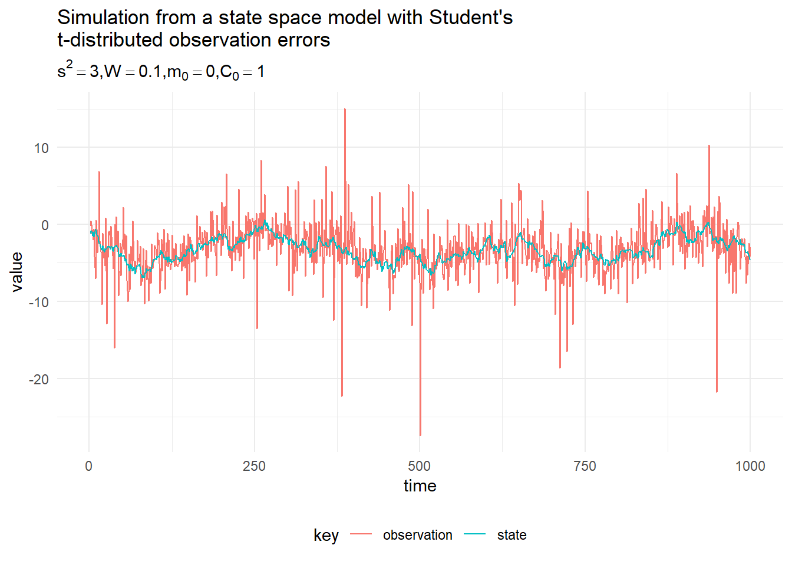
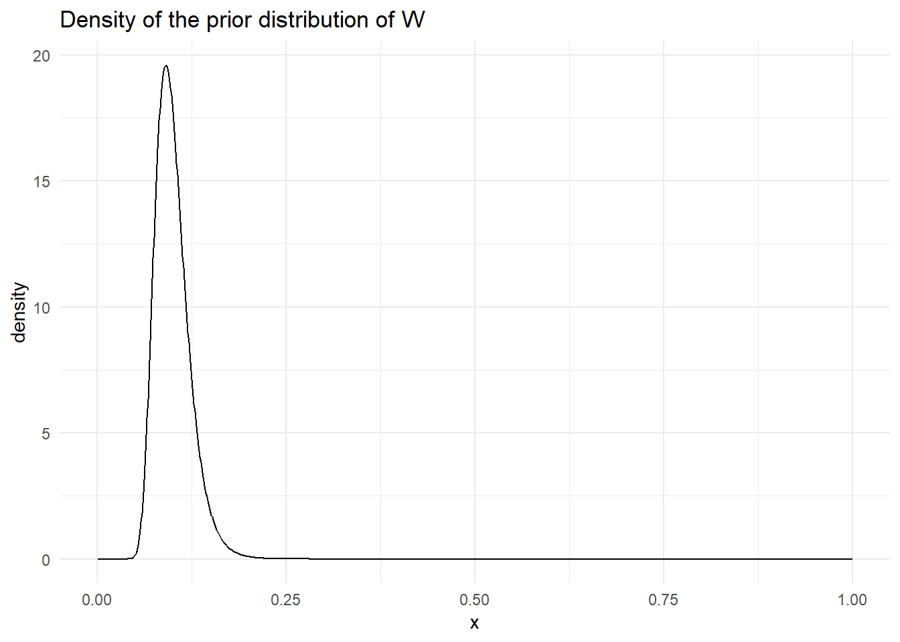
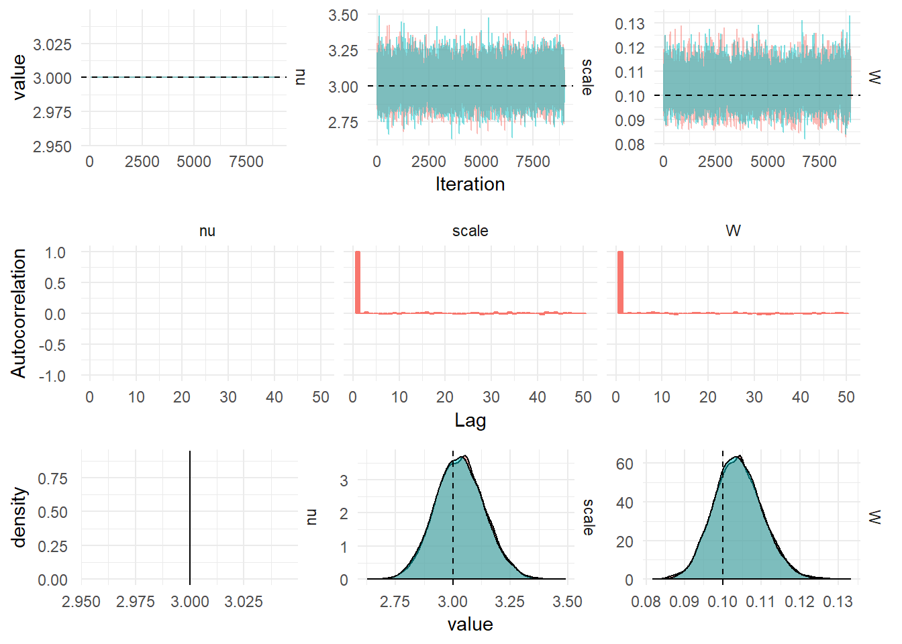

The Student’s t-distribution is not part of the exponential family of distributions, hence is not a DGLM (Dynamic generalised linear model), however it is still useful in its own right. The Student’s t-distribution has thicker tails than the normal distribution for low values of the degrees of freedom hence is more foregiving of outliers in the measurements. The scaled, shifted Student’s t-distribution is parameterised by the location, \(\ell\), scale \(s\) and degrees of freedom \(\nu\), the probability density function is:
\[p(x|\ell, s, \nu) = \frac{\Gamma\left(\frac{\nu + 1}{2}\right)}{\sqrt{\pi\nu s}\Gamma(\frac{\nu}{2})} \left(\frac{(x-\ell)^2}{\nu s^2} + 1 \right)^{- \frac{\nu + 1}{2}}\]
Then the state-space model, with a first order polynomial latent-state evolution can be written as:
\[\begin{aligned} Y_t &\sim t_\nu(x_t, s^2), \\ x_t &= x_{t-1} + w_t, \qquad w_t \sim \mathcal{N}(0, W), \\ x_0 &\sim \mathcal{N}(m_0, C_0). \end{aligned}\]
The Student’s t model is specified in scala by first specifying a DLM model, which specifys the system and observation matrices (\(G_t\) and \(F_t\)) then specifying the observation model using the Dglm class:
import dlm.model._
val dlm = Dlm.polynomial(1)
val mod = Dglm.studentT(3, dlm)The code below can be used to simulate 1,000 iterations from the Student’s t model.
import breeze.linalg.{DenseVector, DenseMatrix}
val params = Dlm.Parameters(
DenseMatrix(3.0),
DenseMatrix(0.1),
DenseVector(0.0),
DenseMatrix(1.0))
val data = Dglm.simulate(mod, params).
steps.
take(1000).
toVectorA simulation from the model with \(\{s^2, W, m_0, C_0\} = \{3, 0.1, 0, 1\}\) is presented in the figure below:

In order to fit the t-distributed state space model to observed data we need to learn the values of the parameters \(\psi = \{s^2, W, m_0, C_0\}\). A particle filter can be used to find an (unbiased) estimate of the likelihood, then Metropolis Hastings can be used to learn the posterior distribution of the parameters. Alternatively, Particle Gibbs can be used to sample a value of the state then the conjugate structure of the latent-state with unknown variance, \(W\) can be exploited. The scale would then be updated using Metropolis hastings. However, since the Student’s t-distrubtion is an Inverse Gamma mixture of normals, we can use the Kalman Filter to sample the value of the state and perform Gibbs sampling for the value of the scale, \(s\).
Student’s t-distribution arises as a Inverse Gamma mixture of Normals, consider \(X | V \sim \mathcal{N}(\mu, V)\), \(W \sim \textrm{Inverse-Gamma}(\alpha, \beta)\) then the marginal distribution of \(X\) is:
\[\begin{aligned} p(X) &= \int_0^\infty p(X|V)p(V) \textrm{d}V, \\ &= \int_0^\infty \frac{\beta^\alpha}{\sqrt{2\pi}\Gamma(\alpha)} V^{-\frac{1}{2}} \exp \left(\frac{-(x-\mu)^2}{2V}\right) V^{-\alpha-1} \exp \left( -\frac{\beta}{V} \right) \textrm{d}V, \\ &= \frac{\beta^\alpha}{\sqrt{2\pi}\Gamma(\alpha)}\int_0^\infty V^{-(\alpha + \frac{1}{2}) - 1} \exp \left\{-\frac{1}{V}\left(\frac{(x-\mu)^2}{2} + \beta \right)\right\} \textrm{d}V,\\ &= \frac{\beta^\alpha\Gamma\left(\alpha + \frac{1}{2}\right)}{\sqrt{2\pi}\Gamma(\alpha)\left(\frac{(x-\mu)^2}{2} + \beta \right)^{\alpha + \frac{1}{2}} } \\ &= \frac{\beta^\alpha\Gamma\left(\alpha + \frac{1}{2}\right)}{\sqrt{2\pi}\Gamma(\alpha)\beta^{\alpha + \frac{1}{2}}\left(\frac{(x-\mu)^2}{2\beta} + 1 \right)^{\alpha + \frac{1}{2}}} \\ &= \frac{\Gamma\left(\frac{2\alpha + 1}{2}\right)}{\sqrt{2\pi\beta}\Gamma(\alpha)} \left(\frac{(x-\mu)^2}{2\beta} + 1 \right)^{- \frac{2\alpha + 1}{2}} \end{aligned}\]
Then comparing this result with the PDF of the scaled, shifted Student’s t-distribution we can see that, \(\nu = 2\alpha\), \(\ell = \mu\) and \(s = \sqrt{\beta/\alpha}\).
This derivation means we have found a way to simulate from a scaled, shifted Student’s t-distribution, by first simulating \(V_i\) from the Inverse Gamma distribution with parameters \(\alpha = \nu/2\) and \(\beta = \nu s^2/2\), then simulating from a Normal distribution with mean \(\ell\) and variance \(V_i\). Further, this means we can use Kalman Filtering for a model with a Student-t observation distribution.
A Dynamic linear model with Student’s t-Distribution observation noise can be written as:
\[\begin{aligned} Y_t | \textbf{x}_t &\sim t_\nu(F_t \textbf{x}_t, s),\\ \textbf{X}_t | \textbf{x}_{t-1} &= G_t\textbf{x}_{t-1} + \textbf{w}_t, &\textbf{w}_t &\sim \textrm{MVN}(0, W t),\\ \textbf{X}_0 &\sim \textrm{MVN}(m_0, C_0). \end{aligned}\]
Where the location of the Student’s t-distribution is \(F_t\textbf{x}_t\), the scale and degrees of freedom are static and can be learned from the data. Consider the measurement update step of the Kalman filter with the new observation distribution:
\[p(Y_t|\textbf{x}_t) = \int_0^\infty \mathcal{N}\left(Y_t; F_t\textbf{x}_t, V_t\right)\textrm{InverseGamma}\left(V_t;\frac{\nu}{2}, \frac{\nu s^2}{2}\right) \textrm{d}V_t\]
Using the result in the previous section, that the Student’s t-distribution is an Inverse Gamma mixture of Normals. The joint distribution of all the random variables in the model can be written as:
\[\begin{aligned} p(\textbf{x}_{0:T}, y_{1:T}, s, W) &= p(W)p(x_0)\prod_{t=1}^Tp(V_t)p(Y_t|\textbf{x}_t, V_t)p(\textbf{x}_t|\textbf{x}_{t-1}, W) \\ &= \textrm{InverseGamma}(W_j; \alpha, \beta) \mathcal{N}(\textbf{x}_0; m_0, C_0)\times\\ &\prod_{t=1}^T\textrm{InverseGamma}\left(V_t; \frac{\nu}{2}, \frac{\nu s^2}{2}\right)\mathcal{N}(Y_t; F_t\textbf{x}_t, V_t)\mathcal{N}(\textbf{x}_t; G_t\textbf{x}_{t-1}, W) \end{aligned}\]
Using the Markovian property of the latent-state and the conditional independence in the model. Construct a Gibbs Sampler, the state can be sampled conditional on the observed data \(y_{1:T}\) and the parameters \(W\) and \(V_t\) using FFBS.
For the system noise matrix, assume the matrix is diagonal, with each diagonal element indexed by \(j\):
\[\begin{aligned} p(W_j|\textbf{x}_{0:T}, y_{1:T}, s, V) &= p(W)\prod_{t=1}^Tp(\textbf{x}_t|\textbf{x}_{t-1}, W) \\ &= \textrm{InverseGamma}(\alpha, \beta)\prod_{t=1}^T\mathcal{N}(G_t\textbf{x}_{t-1}, W) \\ &= \textrm{InverseGamma}\left(\alpha + \frac{T}{2}, \beta + \frac{1}{2}\sum_{i=1}^t (\textbf{x}_t - G_t\textbf{x}_{t-1})_j^2 \right). \end{aligned}\]
For the auxiliary variable, \(V_t\), the variance of the Normal distribution:
\[\begin{aligned} p(V|\textbf{x}_{0:T}, y_{1:T}, W, s) &= \prod_{t=1}^Tp(Y_t|\textbf{x}_t, V_t)p(V_t) \\ &= \prod_{t=1}^T\textrm{InverseGamma}\left(\frac{\nu}{2}, \frac{\nu s^2}{2}\right)\mathcal{N}(F_t\textbf{x}_t, V_t) \end{aligned}\]
Then for each observation of the process, we have to sample a value of the variance from:
\[\begin{aligned} p(V_t|\textbf{x}_{0:T}, y_{1:T}, W, s) &= p(Y_t|\textbf{x}_t, V_t)p(V_t), \\ &= \textrm{InverseGamma}\left(\frac{\nu + 1}{2}, \frac{\nu s^2 + (y_t - F_t\textbf{x}_t)^2}{2}\right). \end{aligned}\]
For the scale of the Student’s t-distribution, \(s^2\):
\[\begin{aligned} p(s^2|y_{1:T}, \textbf{x}_{0:T}, W, V) &= \prod_{t=1}^T\textrm{InverseGamma}\left(V_t; \frac{\nu}{2}, \frac{\nu s^2}{2}\right) \\ &\propto \prod_{t=1}^T \left(\frac{\nu s^2}{2}\right)^{\frac{\nu}{2}} \exp\left(-\frac{\nu s^2}{2V_t}\right) \\ &= \left(\frac{\nu s^2}{2}\right)^{\frac{T\nu}{2}}\exp\left(-\frac{\nu}{2} \sum_{i=1}^T\frac{s^2}{V_t}\right) \\ &\propto (s^2)^{T\nu/2}\exp\left(-\frac{\nu}{2} \sum_{i=1}^T\frac{s^2}{V_t}\right) \\ &\propto \textrm{Gamma}\left(\frac{T\nu}{2} + 1, \frac{\nu}{2} \sum_{i=1}^T\frac{1}{V_t}\right) \end{aligned}\]
Note that we have assumed the degrees of freedom of the Student’s t-distribution (\(\nu\)) is known a-priori. This can also be learned from the data using a Metropolis-Hastings step.
The Kalman Filter needs to incorporate the change of variance at each timestep. The step which has to be changed is the one-step prediction, once we have sampled the variances, \(V_t\) for each observation from the posterior distribution derived above, we can perform the Kalman filter conditional upon knowing these variances:
\[\begin{aligned} \textrm{Prediction:} & & \textrm{draw } V_t &\sim \textrm{InverseGamma}\left(\frac{\nu + 1}{2}, \frac{\nu s^2 + (y_t - F_t\textbf{x}_t)^2}{2}\right). \\ & & f_t &= F(t) a_t \\ & & Q_t &= F_t R_t F_t^\prime + V_t \end{aligned}\]
This is sufficient to learn the parameters of a DGLM with a Student’s t-Distributed observation noise. The advantage to this approach is that we don’t have the computational complexity of using a Particle Filter for each iteration of the MCMC.
The prior distribution of the system evolution matrix is Inv-Gamma\((21, 2)\), for a mean of 0.1 and variance 0.19. The prior distribution for \(W\) looks like:

In order to run the perform Gibbs sampling on the sampled data, we use the following code:
val iters = StudentT.sample(3, data.map(_._1), InverseGamma(21.0, 2.0), mod, params)